（一）hexo的初步生成与部署
参考资料：hexo史上最全搭建教程
1、注册GitHub
本博客最终免费部署到GitHub上，所以需要GitHub账号。GitHub
没有的可以注册一个GitHub账号。
记住GitHub的用户名和邮箱
2、安装Git
Git是目前世界上最先进的分布式版本控制系统，可以有效、高速的处理从很小到非常大的项目版本管理。这也是用来管理你的hexo博客文章，上传到GitHub的工具。廖雪峰老师的Git教程写的非常好：Git教程。可以简单了解下什么是Git，不需要深入了解Git的相关知识，要用什么直接上网查即可。
到git官网上下载windows版本，Download for Windows,下载安装后会有一个Git Bash的命令行工具，以后就用这个工具来使用git。
安装步骤参考：Git 详细安装教程
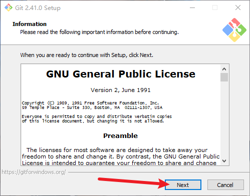
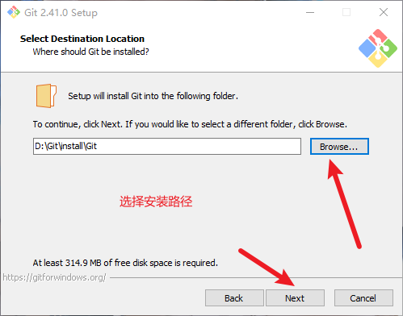
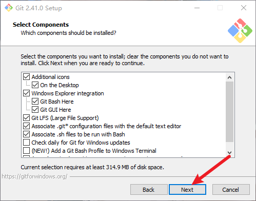
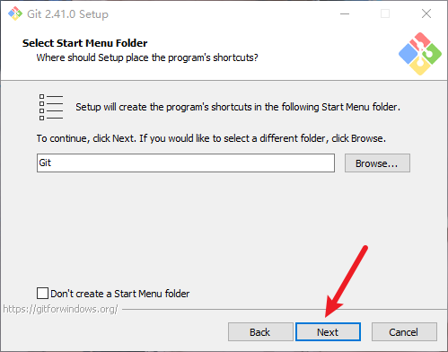
这里选择了vscode作为默认编辑器。也可以选择默认的Vim。选择vscode需要先下载vscode再进行下一步，还要在我的电脑->属性->高级系统设置->高级->环境变量->系统变量->Path->编辑添加（其实这步的设置默认编辑器暂时即可，在后续的整个搭建中还没有遇到需要使用这个的情况，仅仅是因为本人对vscode熟悉，所以设置成了vscode）
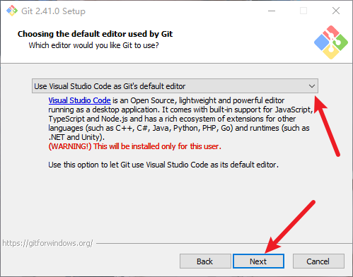
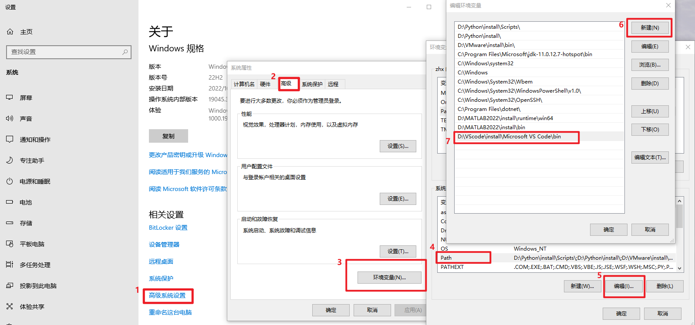
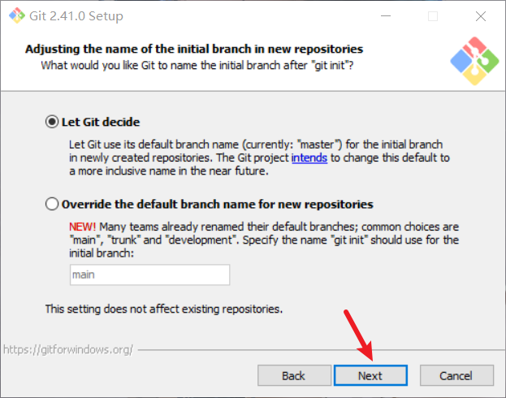
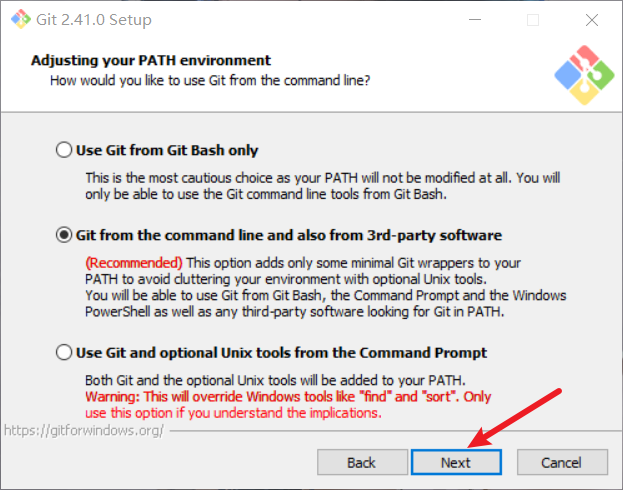
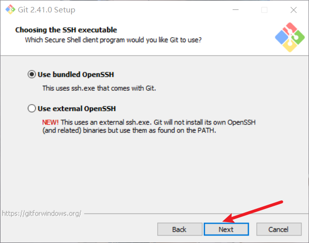
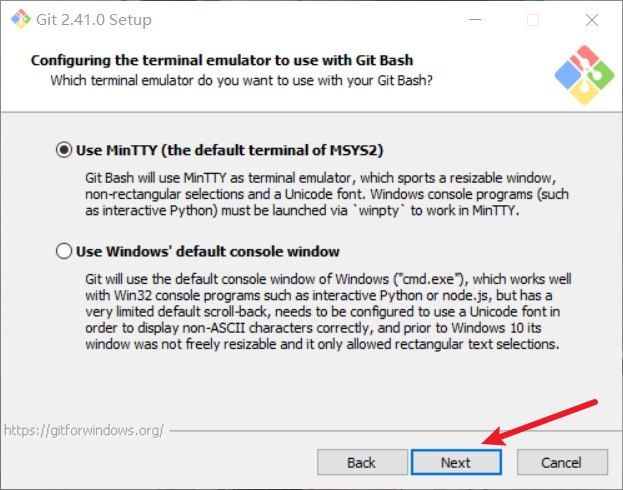
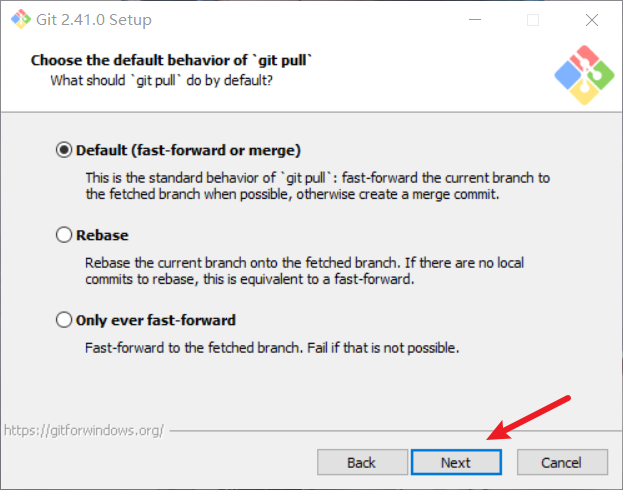
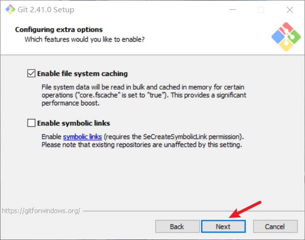
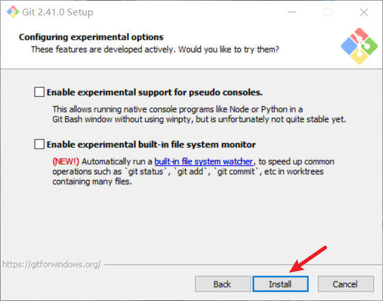
在开始菜单应用里打开Git Bash，输入git --version
查看版本，检查是否安装成功
1 | git --version |
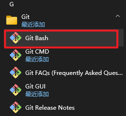
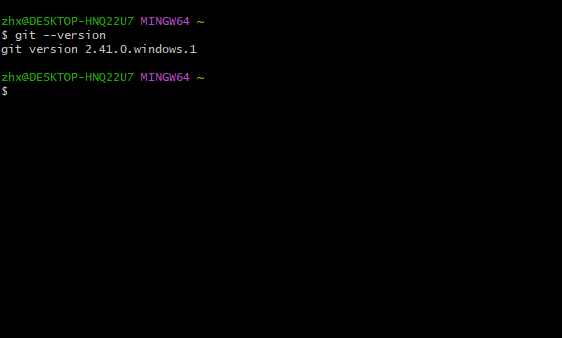
将Git和GitHub账号绑定，分别输入以下命令：
1 | git config --global user.name "你的GitHub用户名" |
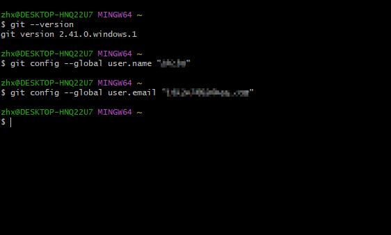
3、安装Node.js
Hexo是基于nodeJS编写的，所以需要安装nodeJs和里面的npm工具。nodejs 选择LTS版本就行了。
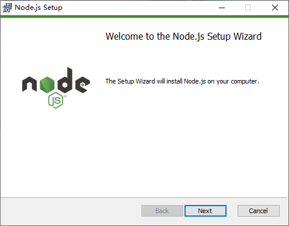
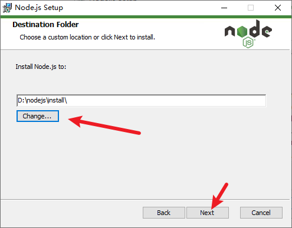
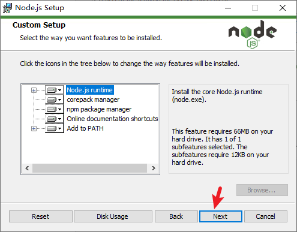
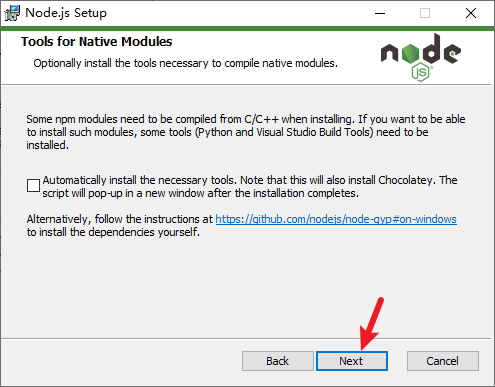
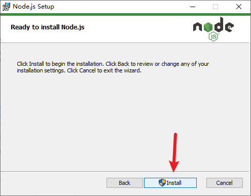
4、安装hexo
官网主页简单说明了会使用到的命令，下面详细说明：
新建一个文件夹，命名最好英文，这里命名为blog，在该文件夹内右键打开
Git Bash ，输入命令安装：
1 | npm install hexo-cli -g |
安装完后使用 hexo -v 查看版本，验证安装是否完成
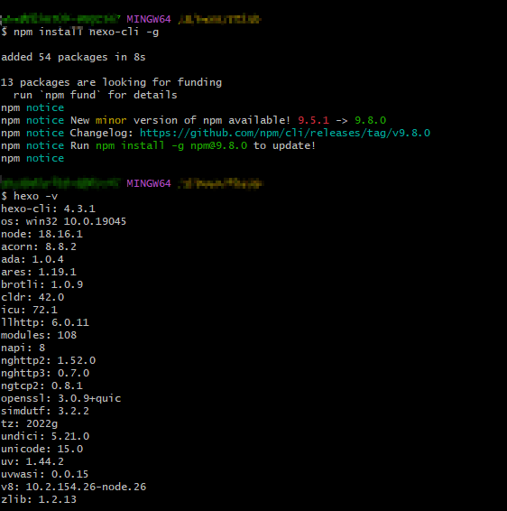
初始化hexo，输入命令创建文件夹myblog（也可以根据习惯修改文件夹名），这个文件夹就是站点根目录，后面会多次提到站点根目录
1 | hexo init myblog |
然后输入命令进入myblog文件夹：
1 | cd myblog |
输入：
1 | npm install |
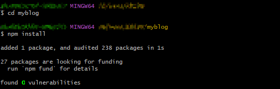
再依次输入：（也可输入简写：hexo g 和
hexo s）
1 | hexo generate |
hexo generate 顾名思义，生成静态文章，可以用
hexo g缩写 hexo server
在本地开启服务，可以用hexo s缩写。后续修改配置会经常使用这个命令在本地查看效果。
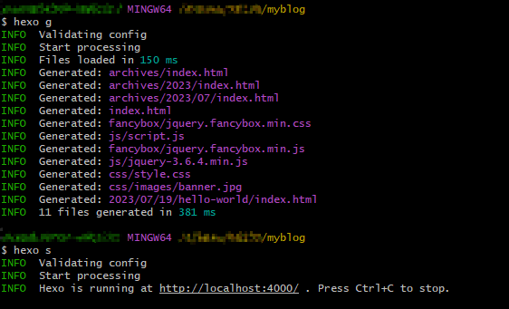
根据命令行最后一行的提示Hexo is running at http://localhost:4000/ . Press Ctrl+C to stop，可以在浏览器输入
http://localhost:4000/，就可以在本地看到博客效果了。在Git Bash中按Ctrl+C退出服务。
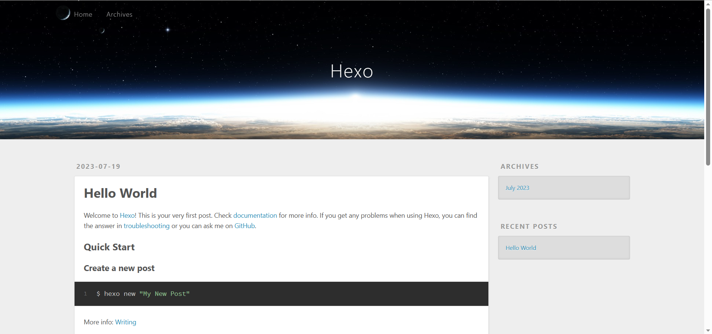
到这里博客就已经生成好了。
5、免费部署到GitHub
在GitHub中新建仓库
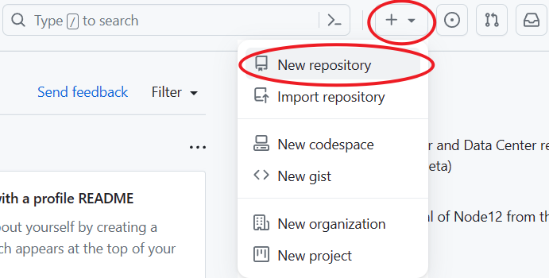
创建一个仓库，命名为
你的用户名.github.io，只有这样，将来要部署到GitHub
page的时候，才会被识别，也就是xxxx.github.io，其中xxx就是你注册GitHub的用户名。点击底部的Create repository创建。
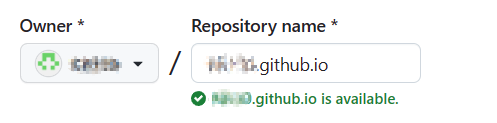
在Git Bash中输入以下两条，检查之前的用户名和邮箱输对没有：
1 | git config user.name |
然后创建SSH，输入指令后需要按几次回车
1 | ssh-keygen -t rsa -C "输入你的邮箱" |
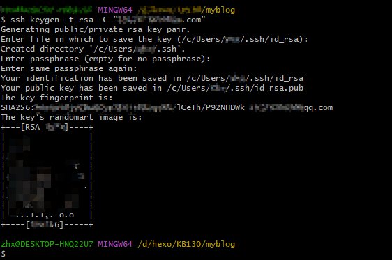
这个时候它会告诉你已经生成了.ssh的文件夹。在你的电脑中找到这个文件夹。
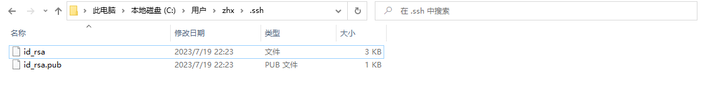
ssh，简单来讲，就是一个秘钥，其中，id_rsa是你这台电脑的私人秘钥，不能给别人看的，id_rsa.pub是公共秘钥，可以随便给别人看。把这个公钥放在GitHub上，这样当你链接GitHub自己的账户时，它就会根据公钥匹配你的私钥，当能够相互匹配时，才能够顺利的通过git上传你的文件到GitHub上。
在GitHub的setting中，找到SSH keys的设置选项，点击New SSH key
把你的id_rsa.pub（可以用记事本打开）里面的信息复制到key。点击Add SSH key
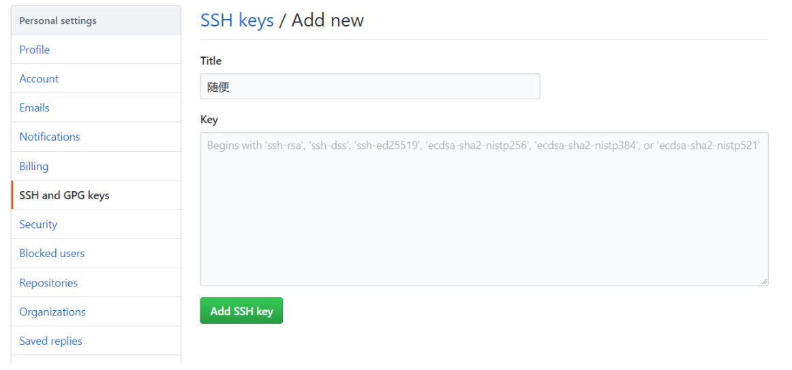
在Git Bash中，查看是否成功（中间要输入一次yes），最后出现successfully字样就是成功了。
1 | ssh -T git@github.com |
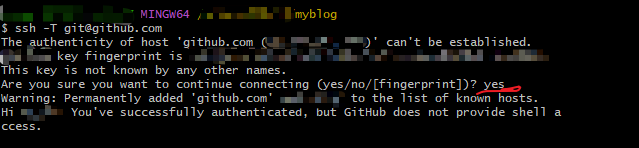
这一步，我们就可以将hexo和GitHub关联起来，也就是将hexo生成的文章部署到GitHub上，打开站点配置文件
_config.yml，翻到最后，修改为：
1 | deploy: |
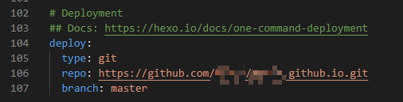
这个时候需要先安装deploy-git
，也就是部署的命令，这样你才能用命令部署到GitHub。在Git Bash中：
1 | npm install hexo-deployer-git --save |
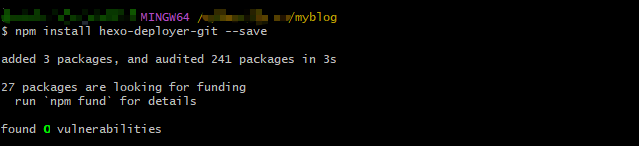
然后依次输入：（输入hexo d可能出问题，大多是网络问题，可以多试几次，或过一会再试）
（一直出问题可以参考：Hexo d部署报错之spawn failed的解决方案 的方法2）
1 | hexo clean |
其中 hexo clean清除了你之前生成的东西，也可以不加。
hexo deploy 部署文章，可以用hexo d缩写
hexo d 过程中会提示登录GitHub
部署成功后就可以在浏览器输入：https://用户名.github.io/看到博客了。（部署后一般需要等几分钟）